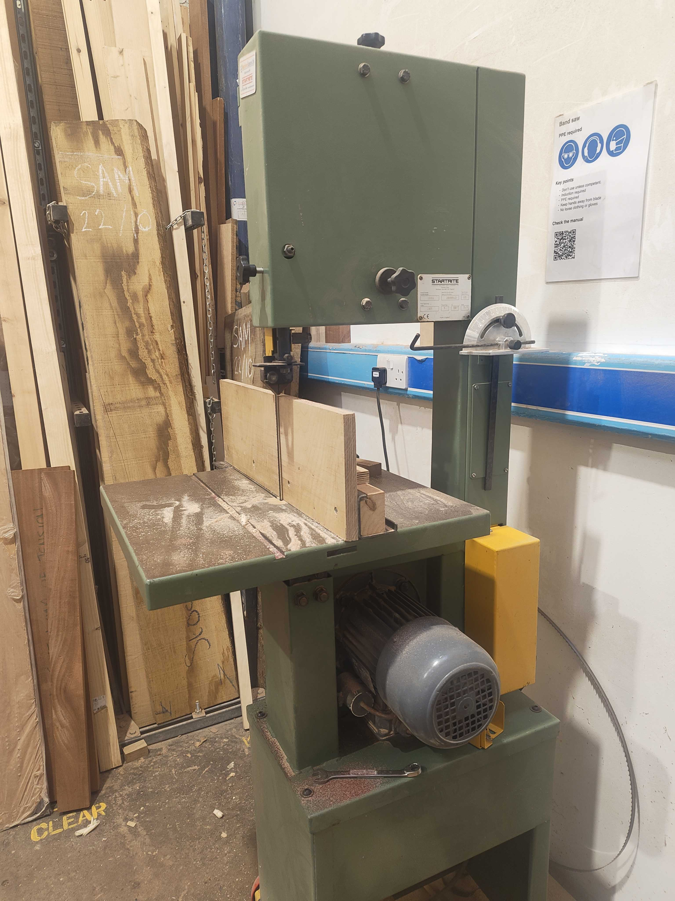
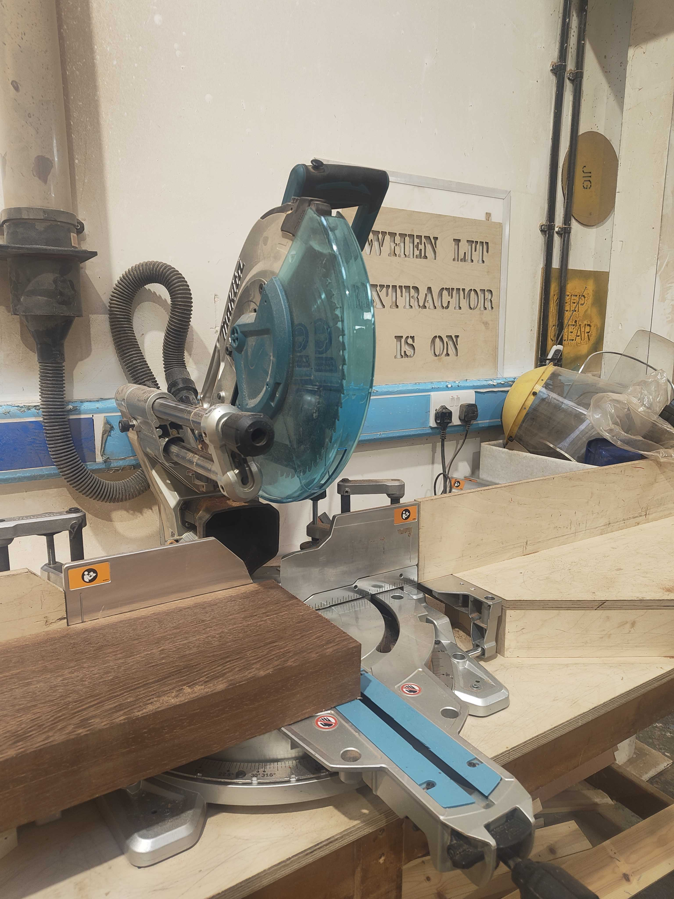

Three machines and a growing appreciation for the power of knowing what you're doing.
What I tried
This morning found me back at the Maker Space, this time alongside five others for my first woodworking machinery induction. I was excited. Having a tutor available to walk me through three machines felt like a real opportunity to explore a side of woodworking I'd barely touched. I'm particularly interested in developing traditional hand skills, but I know machinery will eventually become part of the picture. There's something rather lovely about learning to work with your hands while also understanding the machines that have made woodworking less physically demanding over the years.
Before we got anywhere near a blade, there was the conversation about health and safety. And quite rightly so. We talked about personal protective equipment, dust, noise and the risks that come with working in a workshop. Even something as small as a splinter can cause a surprising amount of trouble.
It might feel like a lot of preparation before making a single cut, but I'm beginning to appreciate that safety isn't something separate from woodworking. It's part of learning to do it properly.
What I noticed
The bandsaw: a surprisingly friendly introduction. First up was the Startrite 3015 bandsaw.
We explored how the machine works, including its belt system, what it's designed to do and the safety checks needed before using it. I was surprised by how quickly I began to feel comfortable with it. There was something particularly appealing about its versatility. Unlike a handsaw, where I'm still concentrating on making a reasonably straight cut, the bandsaw opens up possibilities for cutting shapes and curves.
We discussed blade guards, using suitable jigs and keeping hands away from the cutting path. One practical lesson stuck with me: don't force the timber through the blade. Feed it at a controlled rate that suits the material and the cut. It sounds obvious, but it's a familiar theme from my first afternoon practising with handsaws. More force doesn't necessarily mean better results.
I can already imagine the bandsaw becoming useful when I start making more ambitious projects.
Next came the Makita LS1219L compound mitre saw. The compound mitre saw: impressive, powerful and a little intimidating
This one looked considerably more serious. The range of adjustments was fascinating. Mitres, bevels and combinations of angles that made me wonder how anyone remembers what goes where. And then there's the ease with which it cuts through timber. After spending my previous workshop session making eight cuts by hand, watching a machine do the work so effortlessly was rather satisfying. But I was also much more conscious of the risks. Kickback is something I've never experienced, and I'd very much like to keep it that way. There's an odd tension between being excited to use a powerful machine and being genuinely frightened of what could happen if something goes wrong.What stayed with me most was the advice to trust your instincts. If something doesn't feel right, stop and ask. No ego. No pretending to understand something because everyone else seems comfortable.
Before switching on a machine, I want to be thinking about where the timber is positioned, how the cut will happen, what might move and where my hands need to be. That kind of thinking feels just as important as learning which buttons to press.
Finally, we reached the machine I'd been most nervous about. The Startrite 175 Tilt Arbor table saw. Even the name sounds rather serious.
We explored how the blade could be adjusted and tilted, and how the machine could be used for cutting larger pieces of timber. The safety discussion was noticeably longer this time. There was much more to consider, from guarding and positioning to the consequences of something going wrong. We were also advised not to use this particular machine alone. I don't imagine I'll be rushing to use it independently any time soon. But I was glad to have the opportunity to try it.
Having the crown guard in place made a noticeable difference to how comfortable I felt. It didn't remove the risks, of course, but it helped me understand how the different safety measures contribute to operating the machine. And when you hear the motor and see the blade working, it's difficult not to appreciate the amount of power involved. The table saw is probably going to remain on my list of things to learn more about rather than things I'm eager to use straight away. I'm quite comfortable with that.
What I'm learning
What struck me throughout the morning was how different the three machines felt.
The bandsaw seemed surprisingly approachable. The mitre saw was exciting, but demanded more confidence. The table saw made me acutely aware of how much I still need to understand. And yet all three offered something that would be difficult, slower or more physically demanding to achieve by hand.
I'm beginning to see that learning machinery isn't simply about making woodworking quicker. It's about understanding what each tool is designed to do, recognising its limitations and deciding when it's appropriate to use it. I'm also questioning what confidence should actually look like in a workshop. Is it being able to approach a machine without feeling nervous? I'm not convinced.
Perhaps it's being able to recognise when something isn't right, ask a question without embarrassment and make a considered decision about whether to proceed.
The more I learn, the more I realise that being comfortable with a tool and being competent with it aren't necessarily the same thing. That's a distinction I want to remember. There's also something reassuring about discovering that the patience I'm trying to develop with hand tools applies just as much to machinery. You still need to understand the material, plan the cut and pay attention to what you're doing. The machine might make the cut faster. But it doesn't do the thinking for you.
Next time
I'm looking forward to getting back to making things. The induction has opened up a whole new set of possibilities, but I'm not planning to abandon my handsaw just yet. I still want to develop the fundamentals of measuring, marking, cutting accurately and understanding how timber behaves.
What I'd like to do now is begin connecting those hand skills with the machinery I've been introduced to. The bandsaw feels like a sensible place to develop my understanding further, with appropriate supervision and within the limits of my induction. I'm also keen to learn more about what the compound mitre saw can do, particularly how different angles are measured and set up accurately. The table saw can wait.
I want to keep building confidence through practice, asking questions and becoming more comfortable recognising what I do and don't know. Three machines down. But with a healthy respect for all of them.

